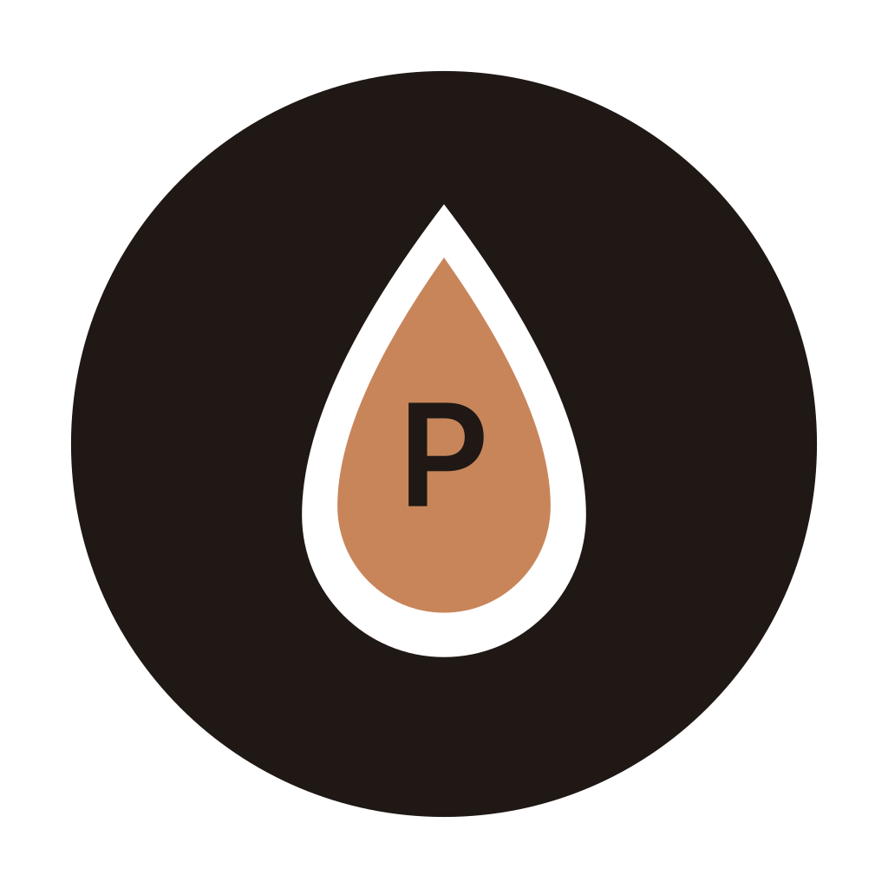

The espresso dial-in companion.
Track beans, log shots, assess taste, and get one clear adjustment after every pull — until the recipe is dialled in.
Join the beta on TestFlightReal screens · iPhone & iPad
Tell PullBook how the shot tasted and it recommends a single change — grind, dose, or yield — so you converge instead of guessing.
Roast dates, freshness windows, process, and price per bag. Scan the QR code on the bag and the details fill themselves in.
Doses, yields, shot times, and pre-infusion — with a live timer while you pull and your actual scale numbers after.
A simple taste wheel — sour to bitter, weak to strong — turns your palate into data the recommendation engine can use.
Your shelf and journal follow you between devices through iCloud. Nothing to set up, no account to create.
Built-in reference on extraction, freshness, roast levels, and why your shot tastes the way it does.
Most beans take a handful of shots to dial in. PullBook keeps the loop honest — each shot builds on the last, and when three in a row land, the recipe is yours.
No accounts. No tracking. Your shots live on your devices and your own iCloud — nowhere else.